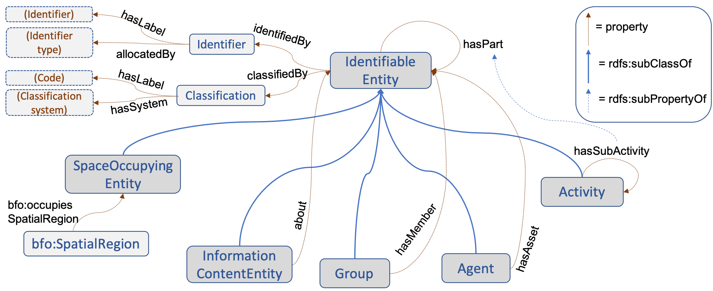

Digital Construction Ontologies
|
Version |
0.2 |
|
Status |
Ontology Specification Draft |
Purpose
Digital technologies are increasingly used in all stages of construction lifecycle. Existing buildings and sites can be mapped with scanning technologies, designs created using the tools of building information modeling (BIM), design and management information consumed at the site through mobile devices, the progress of construction monitored with sensors (position, occupancy, activity state) and scanning devices, and facility management based on data gathered by building automation systems (BAS) and sensors.
Digital construction means that large volumes of heterogeneous data will be produced at each lifecycle stage. It is a significant challenge to process and interrelate different pieces of data into a meaningful and accurate overall picture that is operationally useful and understandable to both human and automated agents. The purpose of the Digital Construction Ontology Suite is to address the semantic level of this challenge, by providing the essential concepts and properties faced in construction and renovation projects, thus paving the ways to the ultimate integration of information from different decentralized sources.
Ontology suite (https://w3id.org/digitalconstruction/)
| Entities | https://w3id.org/digitalconstruction/Entities | Identifiable entities with classifications, breakdowns and groupings |
| Processes | https://w3id.org/digitalconstruction/Processes | Activities, capabilities, constraints and variables |
| Agents | https://w3id.org/digitalconstruction/Agents | Actors and stakeholders, and their relations and contracts |
| Information | https://w3id.org/digitalconstruction/Information | Information content entities including designs, plans, events, and issues |
| Contexts | https://w3id.org/digitalconstruction/Contexts | Multi-contexts data: planned/actual, as-designed/as-built, levels of detail |
| Variabless | https://w3id.org/digitalconstruction/Variables | Variables and constraints to support the representation of incomplete plans and management of changes |
| Occupant Behavior | https://w3id.org/digitalconstruction/OccupantBehavior | Occupant behavior and comfort |
| Indoor Air Quality | https://w3id.org/digitalconstruction/IndoorAirQuality | Indoor air quality |
| Building Acoustics | https://w3id.org/digitalconstruction/BuildingAcoustics | Building acoustics |
| Energy Systems | https://w3id.org/digitalconstruction/EnergySystems | Energy systems of buildings |
| Building Materials | https://w3id.org/digitalconstruction/BuildingMaterials | Building materials |
External ontologies
The ontologies in the Digital Construction Ontology Suite are related to other existing ontologies: (1) the concepts of the ontologies above can be based on the concepts of the external ontologies (such as those in BFO or FOAF), or (2) the data represented with above ontologies may need the use also concepts and properties of the external ontologies (such as BIM models represented in ifcOWL or provenance represented with PROV-O).
Overview of the contents of the ontologies
| Scope
Digital construction ontologies aim to capture the relevant objects and properties (relationships and attributes) that can be referred to by people or systems during the management and execution of construction or renovation projects. This includes physical and spatial entities, temporal regions, information contents, agents, activities, and groupings of objects. The primary aim in Digital Construction Ontologies is to define the upper-level concepts (such as those shown in boxes on the right) while providing the possibility to create additional ontologies that extend those definitions with additional more specific concepts (for instance, concepts like those shown outside of boxes on the right). |

|
| Common properties
All identifiable entities can be associated with multiple different identifiers and classifications to facilitate the linking to other construction information, both at the instance level and at the category level. In addition, there are some important other relations:
|
 |
| Activity flows
Activities are related to several different kinds of ingredients (often called flows) that have been studied and identified in the field of lean construction. The flows can be classified into transformed objects, material batches, equipment, labor crews, workspaces, information objects, and environmental conditions, and each activity can have several flows in each of these categories. Activities require that the relevant ingredients are in a proper state before the execution (preconditions) or during it (such as resource reservations). Moreover, activities transform the state of some of the ingredients as the result of their execution (effects). An essential goal is to be able to link different entities to activities since the interest in construction management is in the progress of activity execution but direct observations can mostly be collected from other objects than activities themselves (e.g., sensor data about positions of objects or people, occupancy or locations). A proper linking will enable the derivation of activity execution data from the observations about the linked objects. |

|
| Multi-context data
Different aspects of construction - such as building objects, resources, or activities - can be represented in multiple different contexts and often it is interesting to compare the differences between those contexts. Building-related examples are as-designed and as-built contexts for BIM models, or more comprehensively the contexts for different LODs (levels of detail/development). Typical activity-related contexts are planned and actual data of project execution. Multi-context data is represented using the named graphs of RDF datasets. It is an orthogonal mechanism that allows any objects to be associated with different properties - or even different structures - in different contexts. If needed the multi-context mechanism allows the recording of all differences between planned and actual activities. In addition to the traditionally recorded planned and actual start and end times of activities, it is also possible represent actual activities that do not appear in the plans at all (so-called improvised activities). |

|
| Variables and constraints
Much of the essential information in project management or construction management can be represented in the form of constraints, and over significant periods during project execution, the plans can have incomplete information about the exact values of some properties, such as start and end times of tasks, resources assigned to tasks, locations of entities, and so on. To enable the interoperable sharing of such crucial and common information, the ontologies include a possibility to associate a variable to any property of an object and to represent constraints between variables. This representation is completely orthogonal and can be used to enrich objects and properties defined in any existing ontologies. In the example on the right the properties of an object (shipment1) as defined in the ontology are shown in blue color. Each of those properties is associated with a variable (in red color). The variables again are associated with constraints (in green color) that limit their possible values. |

|
| Integration with the broader Semantic Web
Digital Construction ontologies are designed to observe the Linked Data principles, thus enabling the decentralized publication of construction data, which is essential in construction projects. The ontologies use or are aligened with well-known existing ontologies, as shown in the figure on the right (import relations are shown as solid and reference relations dashed lines). The Basic Formal Ontology (BFO) is imported as the top-level ontology, the BIM models can be provided in ifcOWL or BOT, and concepts from other ontologies such as OWL-Time, PROV-O, FOAF, QUDT, SSN/SOSA, and Saref are used as needed. Further alignment with related efforts such as Industrial Ontology Foundry will be explored. |

|
Contributing projects
BIM4EEB - BIM-based toolkit for efficient renovation of residential buildings (European Union's H2020 research and innovation programme, grant N. 820660) |
Diction - Development of shared situational awareness in construction projects (Business Finland, Collaborative research project 2018-2020) |
Contributing organizations
Contacts
License

Last modified: Fri Mar 6 17:02:26 EET 2020